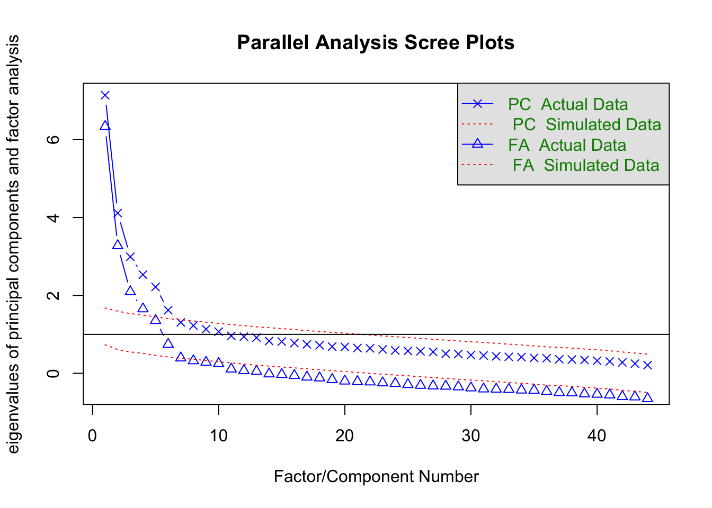
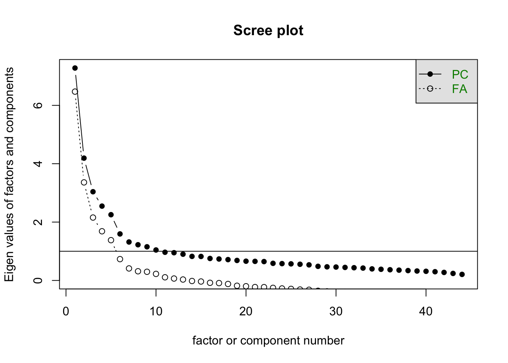
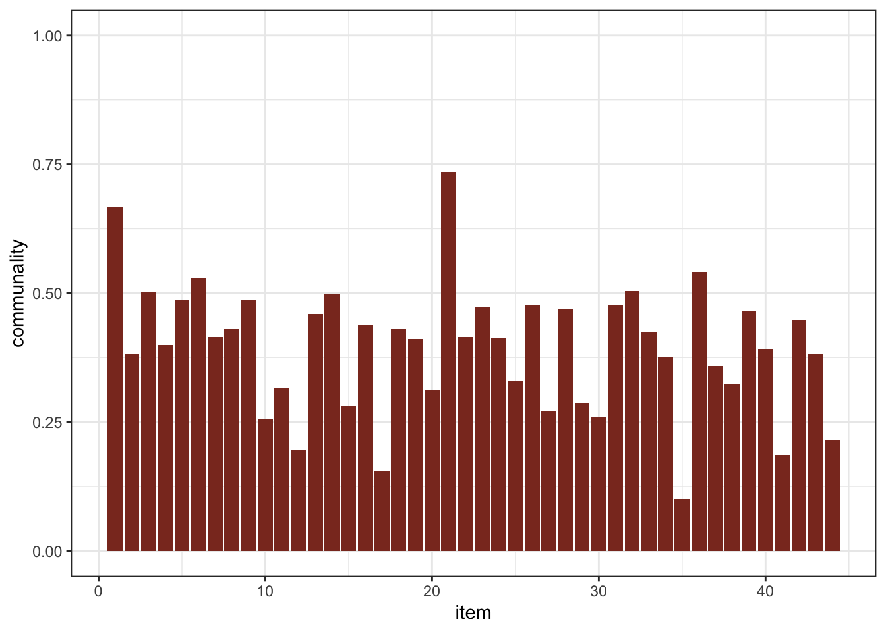

Code
data = read_csv("./data/personality-1.csv")
data_sub = data |>
select(str_c("pers", c("03", "07", 11, 13, 16, 26, 36)))Pablo Vivas
December 19, 2023
The single-factor model using seven indicators is statistically identified. This because the model contains \(14\) parameters \((\lambda_1,...,\lambda_7, \varepsilon_1, ..., \varepsilon_7)\) and the correlation matrix contains \(\frac{7(7+1)}{2} = \frac{56}{2} = 28\) unique pieces of information, also known as degrees of freedom. Hence, we have more degrees of freedom than model parameters which results in the model being statistically identified. (We have \(28-14 = 14\) degrees of freedom to spare 🥳)
mod_01 = '
f1 =~ pers03 + pers07 + pers11 + pers13 + pers16 + pers26 + pers36
'
cfa_01 = cfa(mod_01, data = data_sub)
fitMeasures(cfa_01) |>
tidy() |>
mutate(
measure = names,
value = round(x, 2),
.keep = "unused") |>
filter(measure %in% c("chisq", "pvalue", "cfi", "tli", "rmsea", "srmr")) |>
gt() |>
cols_width(
value ~ px(100)
)| measure | value |
|---|---|
| chisq | 335.48 |
| pvalue | 0.00 |
| cfi | 0.46 |
| tli | 0.19 |
| rmsea | 0.23 |
| srmr | 0.17 |
Given the results of Table 1, the model doesn’t seem to fit the data. Hence, no interpretation of the parameter estimates is needed.
$type
[1] "standardized"
$cov
pers03 pers07 pers11 pers13 pers16 pers26 pers36
pers03 0.000
pers07 -1.273 0.000
pers11 -1.573 -1.031 0.000
pers13 4.594 1.889 -3.704 0.000
pers16 -1.317 0.380 7.996 -5.858 0.000
pers26 -0.538 -2.414 6.839 -4.201 8.375 0.000
pers36 -3.965 0.214 5.930 -1.999 7.634 7.289 0.000We see huge standardized residuals, specifically in the correlation estimates of pers36 and the other items. This is probably due to the wording of this question and its relationship to the other items (they may be correlated). Also, the biggest misfit is happening in the estimate for the correlation between per26 and per16, more than 8 units off. However, it is unclear why is this happening with this two items that seem somewhat different (per16:generates enthusiasm in others, per26: assertive).
lhs op rhs mi epc sepc.lv sepc.all sepc.nox
34 pers16 ~~ pers26 86.315 0.505 0.505 0.449 0.449
28 pers11 ~~ pers16 76.881 0.485 0.485 0.423 0.423
35 pers16 ~~ pers36 69.905 0.452 0.452 0.406 0.406
36 pers26 ~~ pers36 62.433 0.498 0.498 0.383 0.383
29 pers11 ~~ pers26 53.372 0.471 0.471 0.352 0.352
18 pers03 ~~ pers13 49.437 0.833 0.833 1.708 1.708
30 pers11 ~~ pers36 39.064 0.401 0.401 0.302 0.302
31 pers13 ~~ pers16 28.195 -0.247 -0.247 -0.358 -0.358
32 pers13 ~~ pers26 15.656 -0.212 -0.212 -0.263 -0.263
21 pers03 ~~ pers36 13.363 -0.182 -0.182 -0.231 -0.231
27 pers11 ~~ pers13 12.387 -0.190 -0.190 -0.232 -0.232
23 pers07 ~~ pers13 6.781 0.184 0.184 0.310 0.310
25 pers07 ~~ pers26 5.680 -0.119 -0.119 -0.123 -0.123
33 pers13 ~~ pers36 3.471 -0.101 -0.101 -0.127 -0.127
16 pers03 ~~ pers07 2.661 -0.102 -0.102 -0.174 -0.174
17 pers03 ~~ pers11 2.288 -0.075 -0.075 -0.093 -0.093
19 pers03 ~~ pers16 1.514 -0.052 -0.052 -0.077 -0.077
22 pers07 ~~ pers11 1.046 -0.052 -0.052 -0.053 -0.053
20 pers03 ~~ pers26 0.271 -0.026 -0.026 -0.032 -0.032
24 pers07 ~~ pers16 0.143 0.016 0.016 0.020 0.020
26 pers07 ~~ pers36 0.046 0.011 0.011 0.011 0.011As suspected, adding some correlation terms between the error component of the items will improve the fit in the model. This makes sense as some of the items are very similar and probably is easy to understand within the personality theories. Given that we have only \(14\) degrees of freedom left, I will add \(10\) correlation terms as specified in the table above. This because I am interested in maintaining an over-identified model while still be able to asses the fit of it.
mod_02 = '
f1 =~ pers03 + pers07 + pers11 + pers13 + pers16 + pers26 + pers36
pers16 ~~ pers26
pers11 ~~ pers16
pers16 ~~ pers36
pers26 ~~ pers36
pers11 ~~ pers26
pers03 ~~ pers13
pers11 ~~ pers36
pers13 ~~ pers16
pers13 ~~ pers26
pers03 ~~ pers36
'
cfa_02 = cfa(mod_02, data = data_sub)
fitMeasures(cfa_02) |>
tidy() |>
mutate(
measure = names,
value = round(x, 2),
.keep = "unused") |>
filter(measure %in% c("chisq", "pvalue", "cfi", "tli", "rmsea", "srmr")) |>
gt() |>
cols_width(
value ~ px(100)
)| measure | value |
|---|---|
| chisq | 5.92 |
| pvalue | 0.21 |
| cfi | 1.00 |
| tli | 0.98 |
| rmsea | 0.03 |
| srmr | 0.02 |
Given the results of Table 2, we can claim that the data does fit the specified one-factor model with some correlated errors. Comparing this table with the results of Table 1, it is clear the improvement of the original model fitted originally. Also, it is worth mentioning that these two models are nested (the model with no correlation terms is nested into the model with correlation error terms). Because of this fact, we can compare the fit of this two nested models through a \(\chi^2\) test.
Chi-Squared Difference Test
Df AIC BIC Chisq Chisq diff RMSEA Df diff Pr(>Chisq)
cfa_02 4 8607.8 8705.8 5.9217
cfa_01 14 8917.3 8974.5 335.4780 329.56 0.26949 10 < 2.2e-16 ***
---
Signif. codes: 0 '***' 0.001 '**' 0.01 '*' 0.05 '.' 0.1 ' ' 1The results on this test point out what we found with the goodness of fit indexes: the second model does a better job in describing the relationship between the 7 items we analyzed. From a information-based criteria, the second model also has smaller values of AIC and BIC.
lavaan 0.6.16 ended normally after 46 iterations
Estimator ML
Optimization method NLMINB
Number of model parameters 24
Used Total
Number of observations 440 452
Model Test User Model:
Test statistic 5.922
Degrees of freedom 4
P-value (Chi-square) 0.205
Parameter Estimates:
Standard errors Standard
Information Expected
Information saturated (h1) model Structured
Latent Variables:
Estimate Std.Err z-value P(>|z|) Std.lv Std.all
f1 =~
pers03 1.000 0.505 0.515
pers07 1.296 0.458 2.831 0.005 0.654 0.666
pers11 0.160 0.147 1.089 0.276 0.081 0.068
pers13 1.274 0.153 8.313 0.000 0.643 0.613
pers16 0.374 0.142 2.627 0.009 0.189 0.189
pers26 0.150 0.152 0.990 0.322 0.076 0.065
pers36 0.469 0.170 2.762 0.006 0.237 0.203
Covariances:
Estimate Std.Err z-value P(>|z|) Std.lv Std.all
.pers16 ~~
.pers26 0.518 0.061 8.495 0.000 0.518 0.453
.pers11 ~~
.pers16 0.491 0.061 8.029 0.000 0.491 0.424
.pers16 ~~
.pers36 0.446 0.061 7.321 0.000 0.446 0.397
.pers26 ~~
.pers36 0.528 0.070 7.550 0.000 0.528 0.397
.pers11 ~~
.pers26 0.492 0.070 7.054 0.000 0.492 0.359
.pers03 ~~
.pers13 0.247 0.120 2.058 0.040 0.247 0.355
.pers11 ~~
.pers36 0.423 0.069 6.159 0.000 0.423 0.313
.pers13 ~~
.pers16 -0.081 0.038 -2.112 0.035 -0.081 -0.099
.pers26 -0.019 0.044 -0.438 0.661 -0.019 -0.020
.pers03 ~~
.pers36 -0.072 0.042 -1.727 0.084 -0.072 -0.074
Variances:
Estimate Std.Err z-value P(>|z|) Std.lv Std.all
.pers03 0.708 0.105 6.728 0.000 0.708 0.735
.pers07 0.536 0.149 3.597 0.000 0.536 0.556
.pers11 1.390 0.094 14.787 0.000 1.390 0.995
.pers13 0.687 0.152 4.525 0.000 0.687 0.624
.pers16 0.966 0.067 14.335 0.000 0.966 0.964
.pers26 1.350 0.091 14.778 0.000 1.350 0.996
.pers36 1.309 0.091 14.381 0.000 1.309 0.959
f1 0.255 0.103 2.481 0.013 1.000 1.000With the above information we can claim that these items are measuring a latent factor that I’ve decided to name active worker. It is worth mentioning that some of the items are measuring the same aspect of this latent variable, that is why some correlated errors are introduced in the model.
$chisq
[1] 6730.363
$p.value
[1] 0
$df
[1] 946Kaiser-Meyer-Olkin factor adequacy
Call: KMO(r = drop_na(data))
Overall MSA = 0.84
MSA for each item =
pers01 pers02 pers03 pers04 pers05 pers06 pers07 pers08 pers09 pers10 pers11
0.83 0.76 0.91 0.87 0.85 0.85 0.89 0.90 0.79 0.80 0.79
pers12 pers13 pers14 pers15 pers16 pers17 pers18 pers19 pers20 pers21 pers22
0.76 0.87 0.87 0.76 0.85 0.84 0.83 0.81 0.82 0.86 0.87
pers23 pers24 pers25 pers26 pers27 pers28 pers29 pers30 pers31 pers32 pers33
0.90 0.87 0.75 0.84 0.84 0.90 0.79 0.68 0.84 0.85 0.80
pers34 pers35 pers36 pers37 pers38 pers39 pers40 pers41 pers42 pers43 pers44
0.79 0.71 0.89 0.84 0.88 0.88 0.79 0.74 0.88 0.89 0.66 Given the results of this two test, we can conclude that the data is suitable for factor analysis. First, the Bartlett’s test of sphericity provides evidence that our correlation matrix is different from the identity matrix and that there is an intercorrelation between variables that can be explained by common factors. Then, the KMO provides evidence that our data suitable for this analysis, with an overall measure of sampling adequacy of \(0.84\), which is great

Parallel analysis suggests that the number of factors = 6 and the number of components = 6 
Both the parallel analysis and the scree-plot suggest that the number of factors to be extracted is \(6\).
Factor analysis with Call: fa(r = cor_mat, nfactors = 6, n.obs = nrow(drop_na(data)), rotate = "none",
fm = "ml")
Test of the hypothesis that 6 factors are sufficient.
The degrees of freedom for the model is 697 and the objective function was 3.26
The number of observations was 433 with Chi Square = 1344.09 with prob < 1.7e-43
The root mean square of the residuals (RMSA) is 0.04
The df corrected root mean square of the residuals is 0.04
Tucker Lewis Index of factoring reliability = 0.846
RMSEA index = 0.046 and the 10 % confidence intervals are 0.043 0.05
BIC = -2887.21Based on the goodness-of-fit indices, this model seems to be doing a decent job in explaining the intercorrelation between the items. Even thought the \(\chi^2\) test is significant, the other measures to evaluate how good the data fits the model are withing acceptable ranges.
Because these items are similar, I would prefer an oblique rotation to allow correlation between the latent factors.
Loadings:
ML2 ML1 ML3 ML5 ML4 ML6
pers01 -0.663 0.210 0.333 -0.106 0.313
pers02 0.187 -0.129 0.193 -0.451 0.364
pers03 0.664 0.122 0.129
pers04 0.122 0.512 -0.147 -0.120
pers05 0.120 -0.199 0.535
pers06 0.128 0.728 0.119
pers07 0.190 0.502
pers08 -0.620 0.165
pers09 0.166 -0.716 0.162
pers10 0.362 0.275
pers11 -0.267 0.485
pers12 -0.321 0.196
pers13 0.528 0.104 0.253
pers14 0.676
pers15 0.118 0.138 -0.140 0.530
pers16 -0.225 0.130 0.139 0.528
pers17 -0.138 -0.107 0.405 0.139
pers18 -0.725 0.149
pers19 0.631 0.126 0.130 -0.145
pers20 -0.114 0.156 0.471 0.178
pers21 0.892 0.108 -0.162
pers22 0.671
pers23 -0.616 -0.123
pers24 -0.626 0.201
pers25 -0.135 0.515 0.201
pers26 0.131 -0.319 -0.181 -0.204 0.512
pers27 0.269 -0.316 0.166
pers28 0.597 0.161
pers29 0.452 0.127
pers30 0.150 0.530
pers31 0.700 0.188 -0.117
pers32 0.156 0.664
pers33 0.655 0.133 -0.108 0.249
pers34 0.143 -0.638 0.207
pers35 0.224 -0.205
pers36 -0.512 0.225 -0.101 0.427
pers37 -0.228 -0.107 -0.400 0.234
pers38 0.500 0.195
pers39 0.384 0.437 0.135
pers40 0.139 0.621
pers41 -0.387 0.105
pers42 0.120 0.103 0.595
pers43 -0.525 0.164 0.236
pers44 0.118 0.491
ML2 ML1 ML3 ML5 ML4 ML6
SS loadings 3.636 3.222 3.193 2.780 2.441 1.936
Proportion Var 0.083 0.073 0.073 0.063 0.055 0.044
Cumulative Var 0.083 0.156 0.228 0.292 0.347 0.391We see some of the largest factor loading to be negative. I attribute this to the nature of the items in this test. Given that these items are trying to measure personality traits, it is tenable to have items with negative loads on some of the traits and still have a meaningful interpretation. Take, for example, item 8 careless. A negative load of this item on some of the latent variable would indicate that the person is not careless, which means that this worker is careful. In other words, these items may be in reverse coding.
With the loading of the rotated solution, I can provide the following interpretation of the latent factors:

Low communalities in a factor analysis, like the ones observed in Figure 1 (specifically, pers10, pers12, pers17, pers35), suggest that these items are not well explained by the underlined extracted factors. In this context, this can mean that these specific items do not align well with the underlying constructs we are trying to measure with this instrument. In other words, these items might be measuring aspects of personality that are not captured by the six factors we’ve identified, or they may be less relevant or inconsistent in the context of the other items and factors in this questionnaire.
Factor Analysis (FA) is more appropriate for this dataset than Principal Component Analysis (PCA) because FA seeks to identify latent variables that explain observed variables, which is suitable for psychological and personality data, like the one we have. FA models the underlying structure that explains correlations between items, focusing on shared variance. In contrast, PCA maximizes total variance, treating all variance as equally important. PCA would provide a different perspective by combining items into components based on total variance, potentially mixing measurement and error variances, which might not be as meaningful for understanding underlying personality constructs.
| skim_variable | numeric.sd |
|---|---|
| pers23 | 1.3331569 |
| pers40 | 0.9584261 |
| pers16 | 1.0024508 |
| pers09 | 1.2724000 |
| pers39 | 1.2800991 |
| pers07 | 0.9865824 |
| pers17 | 1.0737346 |
| pers15 | 1.1121947 |
| pers41 | 1.2284147 |
| pers34 | 1.1216669 |
Performing an exploratory factor analysis using the covariance matrix is reasonable for this dataset, as the items (pers01 to pers44) are on the same 5-point scale and have similar standard deviations (and hence variances). This similarity in scaling and variance allows for a meaningful comparison of the covariance among items. The results of the factor analysis using the covariance matrix would focus more directly on the shared variances in their original scale, potentially providing insights that align more closely with the actual variance observed in the data. In conclusion, the result will be very similar.
By definition of our model, we have the following:
\[ \hat{\Sigma} = \hat{\Lambda}\hat{\Lambda}^{t} + \hat{\Psi} \]
Using linear algebra, we can compute the fitted correlation matrix as follows:
\[ \begin{align*} \hat{\Sigma} &= \begin{bmatrix} 0.4 & 0.8\\ 0.7 & -0.4\\ 0.1 & 0.7\\ 0.5 & -0.7\\ 0.5 & -0.3\\ 0.5 & 0.2 \end{bmatrix} \cdot \begin{bmatrix} 0.4 & 0.8\\ 0.7 & -0.4\\ 0.1 & 0.7\\ 0.5 & -0.7\\ 0.5 & -0.3\\ 0.5 & 0.2 \end{bmatrix}^t + \begin{bmatrix} .20 & 0 & 0 & 0 & 0 & 0 \\ 0 & .35 & 0 & 0 & 0 & 0 \\ 0 & 0 & .50 & 0 & 0 & 0 \\ 0 & 0 & 0 & .26 & 0 & 0 \\ 0 & 0 & 0 & 0 & .66 & 0 \\ 0 & 0 & 0 & 0 & 0 & .80 \end{bmatrix} \\ \\ &= \begin{bmatrix} (0.4 \times 0.4 + 0.8 \times 0.8) & (0.4 \times 0.7 + 0.8 \times -0.4) & \cdots & (0.4 \times 0.5 + 0.8 \times 0.2) \\ (0.7 \times 0.4 + -0.4 \times 0.8) & (0.7 \times 0.7 + -0.4 \times -0.4) & \cdots & (0.7 \times 0.5 + -0.4 \times 0.2) \\ \\ \vdots & \vdots & \ddots & \vdots \\ \\ (0.5 \times 0.4 + 0.2 \times 0.8) & (0.5 \times 0.7 + 0.2 \times -0.4) & \cdots & (0.5 \times 0.5 + 0.2 \times 0.2) \\ \end{bmatrix}\\ &+ \begin{bmatrix} .20 & 0 & 0 & 0 & 0 & 0 \\ 0 & .35 & 0 & 0 & 0 & 0 \\ 0 & 0 & .50 & 0 & 0 & 0 \\ 0 & 0 & 0 & .26 & 0 & 0 \\ 0 & 0 & 0 & 0 & .66 & 0 \\ 0 & 0 & 0 & 0 & 0 & .80 \end{bmatrix} \\ \\ &= \begin{bmatrix} 0.80 & -0.04 & 0.60 & -0.36 & -0.04 & 0.32 \\ -0.04 & 0.65 & -0.07 & 0.49 & 0.53 & 0.38 \\ 0.60 & -0.07 & 0.50 & -0.44 & -0.16 & 0.18 \\ -0.36 & 0.49 & -0.44 & 0.74 & 0.66 & 0.14 \\ -0.04 & 0.53 & -0.16 & 0.66 & 0.34 & 0.26 \\ 0.32 & 0.38 & 0.18 & 0.14 & 0.26 & 0.29 \\ \end{bmatrix} + \begin{bmatrix} .20 & 0 & 0 & 0 & 0 & 0 \\ 0 & .35 & 0 & 0 & 0 & 0 \\ 0 & 0 & .50 & 0 & 0 & 0 \\ 0 & 0 & 0 & .26 & 0 & 0 \\ 0 & 0 & 0 & 0 & .66 & 0 \\ 0 & 0 & 0 & 0 & 0 & .80 \end{bmatrix} \\ \\ &= \begin{bmatrix} 1.00 & -0.04 & 0.60 & -0.36 & -0.04 & 0.32 \\ -0.04 & 1.00 & -0.21 & 0.63 & 0.47 & 0.20 \\ 0.60 & -0.21 & 1.00 & -0.44 & -0.16 & 0.18 \\ -0.36 & 0.63 & -0.44 & 1.00 & 0.46 & 0.06 \\ -0.04 & 0.47 & -0.16 & 0.46 & 1.00 & 0.14 \\ 0.32 & 0.20 & 0.18 & 0.06 & 0.14 & 1.00 \\ \end{bmatrix} \end{align*} \]
For each item, the communality can be computed as follows:
The uniqueness can be computed as the complement of the communality, this because the correlation matrix was used to perform the factor analysis: